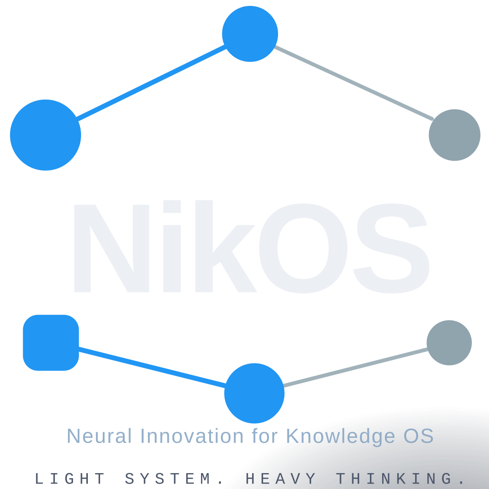
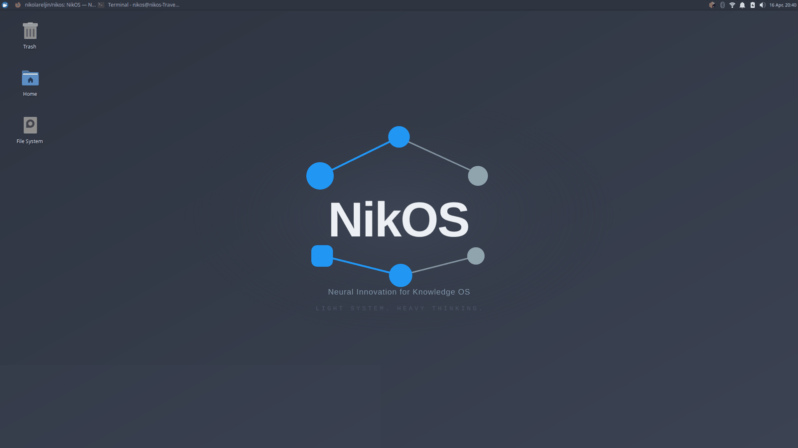

Light system · Heavy thinking
An AI workstation, assembled on the machine you already have.
NikOS is an Ansible playbook that takes an Ubuntu 24.04 install and turns it into a local-first AI development workstation — Xfce on top, Ollama and a conda AI environment underneath, and the developer tooling that usually takes an afternoon to assemble.


What it actually does to the machine
Worth reading before you run it, because some of this is not cosmetic.
| Change | What that means |
|---|---|
| Switches the display manager | GDM3 is disabled and LightDM takes over display-manager.service. On an Ubuntu host this
needs a reboot to take effect. GDM3 is disabled, not removed. |
| Changes your default session | The account's session is set to Xubuntu (Xfce). GNOME stays installed and selectable from the
greeter unless you set nikos_remove_gnome: true. |
| Installs the Xubuntu desktop | xubuntu-desktop-minimal by default, with the Xubuntu greeter and artwork.
xubuntu-full and bare xfce are the other options. |
| Applies a Nord theme | GTK theme, icons, a generated wallpaper, GRUB theme and a Plymouth boot splash. The splash is GPL-3.0-or-later, being derived from Xubuntu's theme; everything else is MIT. |
| Adds apt repositories | GitHub CLI and Microsoft (VS Code), each with its own keyring. Node is not installed from apt - see below. |
| Provides Node without touching apt | Two CLIs are published only through npm. Rather than replacing the
distribution's Node - which would remove npm, eslint,
webpack and a dozen Debian node-* packages - NikOS uses your
Node when it is new enough, and otherwise installs a pinned one under your home
with nvm. |
| Installs Ollama | Runs as a user service and pulls one model by default (qwen2.5-coder:7b, 4.7 GB).
Nothing else is downloaded unless you ask for it. |
| Creates a conda environment | Miniforge under ~/.local/share/nikos-adjacent paths, with a nikos-ai
environment holding PyTorch (CPU), the LangChain and LlamaIndex stacks, and an image analysis stack. |
Clones tools into ~/Projects |
distrodeck, image-view, git-lantern and ai-runner are built or installed from source. |
Everything it does is in the roles, in plain YAML, in the repository. If a line above matters to you, you can read the task that performs it.
Companion tools
Distrodeck
Portable Linux workstation management.
IsoForge
Linux image download and USB flashing.
ai-runner
Archive landing page for a local Ollama runner.
KioskFrame
Photo-frame and dashboard appliance.
How it works
--dev runs the checkout you launched it from instead.What it is for
Running models locally
Ollama with model groups you opt into by capability — reasoning, coding, text, vision, embeddings. The smallest reasoning model runs on a 4 GB machine.
Building on top of them
A conda environment with PyTorch, LangChain, LlamaIndex, Chroma, Qdrant and sentence-transformers, plus llama.cpp for direct inference.
Image analysis
OpenCV, Pillow, scikit-image, timm and Tesseract OCR in the same environment, alongside vision models that read documents and images.
Ordinary development
VS Code, the GitHub CLI, Node, Rust and Go toolchains, and optional bundles for Postgres, Redis, Kubernetes tooling, Podman and more.
The constraint it is built around
A 250 MB idle RAM target. Xfce rather than GNOME, no always-running inference server, and every heavyweight component opt-in. Models load when you call them and unload afterwards, so a 19 GB model on disk costs nothing while you are not using it.
That target is also why the optional bundles exist rather than a single "install everything" default. A base install pulls one model. The rest is yours to choose.
Requirements
- Ubuntu 24.04 LTS or Xubuntu 24.04. Other releases are not supported.
- A non-root user with
sudo. - About 20 GB free disk for a base install.
- 4 GB RAM minimum; 8 GB to run the default 7B model comfortably.
- An internet connection during the run. Offline installs are not supported.